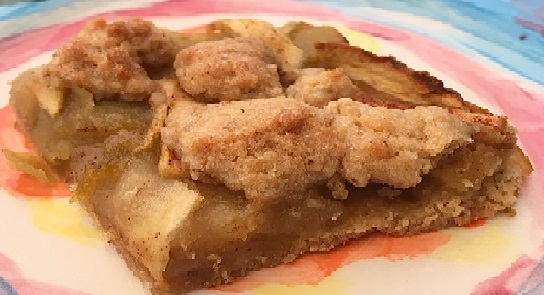

My Grandma's Apple Squares
Ingredients:
-
200g of Margarine
-
2 and 1/2 Cups of Flour
-
1/2 Cup of Brown Sugar and 1/3 Cup of White Sugar
-
1 Flax Egg
-
1 tsp of Baking Powder
-
2 tbsp of Plain Yogurt (optional)
-
1 tsp of Cinnamon
-
Filling: Apple Sauce/Jam, Apples

Method:
-
Mix all the Batter ingredients together.
-
Wrap batter tightly in cling-film and put in fridge for 30 mins.
-
In 30 mins, take out of the fridge and seperate. Put 1/3 into the freezer and roll out onto baking paper.
-
Put filling on top of the rolled out batter and spread evenly.
-
Take out the batter from the freezer and cover the filling with crumbles (small balls).
-
Put it in oven for 30 mins.
-
Cut into squares while still hot.